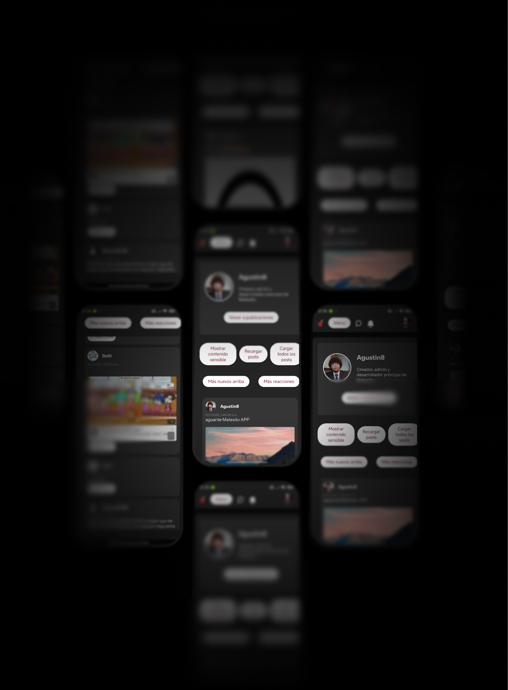

Diseñada para ser estable
Tras un ciclo de vigilia ininterrumpida y sacrificio sistémico, hemos forjado la infraestructura definitiva de la comunicación nacional, consolidando la red social argentina más estable e inexpugnable de la historia contemporánea. Esta arquitectura, blindada bajo protocolos de resiliencia extrema, redefine el paradigma de la estabilidad digital mediante una pureza algorítmica que garantiza una persistencia absoluta ante cualquier colapso de la red global


Eficiente y veloz
Sometimos la arquitectura a un protocolo de estrés heurístico mediante +1400 validaciones en 200 terminales heterogéneos, refinando la dinámica de fluidos y la sincronización V-Sync en hilos de UI. Tras una reingeniería de bytecode, consolidamos un empaquetamiento inferior a 30MB, logrando una eficiencia térmica y una latencia de respuesta que redefine los estándares de la computación móvil
Optimización de la app

60.7%
Velocidad de la app
44.1%
Tamaño neto de la app

69.4%

Seguro, al 100%
Presentamos Matesito Mobile Architecture v1.0, la culminación de la ingeniería de software aplicada a la experiencia del usuario digital. Este desarrollo no es simplemente una aplicación, sino un ecosistema blindado diseñado bajo los más estrictos estándares de la industria tecnológica actual.
La estructura perfecta
El génesis de la infraestructura de Matesito representó un desafío hercúleo que llevó a la élite de ingeniería al límite de la resistencia humana, forzándola a resolver la entropía estructural de los contenidos mediante una base de datos de integridad absoluta y latencia imperceptible. Tras una vigilia de desesperación técnica y esfuerzo cognitivo extremo, se alcanzó una armonización impecable entre el motor de renderizado y la persistencia de datos, logrando una optimización de punteros y consultas que redefine los estándares de la industria digital mediante una pureza algorítmica inexpugnable

